# Zenodo can be a bit slow and the dataset is large so we increase the timeout
old_timeout <- options(timeout=2500)
on.exit(options(old_timeout))SpatialData python & spatialdataR mixed workflows
CSAMA 2026
spatial transcriptomics
sequencing-based
python
R
Xenium
In this demo, we analyse 5K-plex Xenium (10x Genomics) data on a tissue section from a human breast cancer biopsy, derived from here. These include the following elements:
- two
imageobjects:- hematoxylin and eosin staining (“he_image”), and
- 4-plex immunofluorescence image (“morphology_focus”)
- two
shapeobjects:- cell membrane (“cell_boundaries”), and
- nuclei segmentation (“nucleus_boundaries”)
- one
tableobject:- gene \(\times\) cell transcript counts
(based on “cell_boundaries”)
- gene \(\times\) cell transcript counts
- one
pointobject:- individual RNA transcripts
(across 5,101 genes)
- individual RNA transcripts
Preamble
Dataset
A size-reduced example dataset has been deposited on Zenodo.
We need to make sure the timeout used by the
download.file function, which it uses to avoid getting stuck in a forever wait, is large enough (the default is 60 seconds).We’ll retrieve the compressed SpatialData .zarr store together with a reference scRNA-seq dataset in .h5ad format (Janesick et al. 2023), decompress both archives, and stash their on-disk file paths for later.
# the name of the scRNA-seq data file (.h5ad)
url_h5 <- sprintf(
"https://huber.buckets.embl.de/spatialdata-demo/%s",
fnm_h5 <- "BC_scRNAseq_subset.h5ad.zip")
# retrieve:
# - cached copy (from previous download) if available and md5sum matches
# - from zenodo otherwise
zip_h5 <- file.path(tools::R_user_dir("SpatialData.demo", "cache"), fnm_h5)
dir.create(dirname(zip_h5), recursive=TRUE, showWarnings=FALSE)
if (!file.exists(zip_h5) || tools::md5sum(zip_h5) != "15957f532a48d8d3f321ddb569e7e9a4" ) {
download.file(url_h5, zip_h5, quiet=TRUE, mode="wb")
}
# decompress
fnm_h5 <- unzip(zip_h5, exdir=tempdir())
h5 <- grep("h5ad$", fnm_h5, value=TRUE)
cat(basename(h5))BC_scRNAseq_subset.h5ad# SpatialData store (.zarr)
url_zs <- sprintf(
"https://huber.buckets.embl.de/spatialdata-demo/%s",
fnm_zs <- "BC_10x_xenium_sdata.zarr.zip")
# retrieve:
# - cached copy (from previous download) if available and md5sum matches
# - from zenodo otherwise
zip_zs <- file.path(tools::R_user_dir("SpatialData.demo", "cache"), fnm_zs)
dir.create(dirname(zip_zs), recursive=TRUE, showWarnings=FALSE)
if (!file.exists(zip_zs) || tools::md5sum(zip_zs) != "a5ca435ab9ddbbd4ed6ea701e1389ba9" ) {
download.file(url_zs, zip_zs, quiet=TRUE, mode="wb")
}
# decompress
fnm_zs <- unzip(zip_zs, exdir=tempdir())
zs <- grep("zarr$", dirname(fnm_zs), value=TRUE)
cat(basename(zs))BC_10x_xenium_sdata.zarr├── images │ ├── he_image │ │ ├── s0 │ │ │ ├── c │ │ │ │ └── 0 │ │ │ │ ├── 0 │ │ │ │ │ ├── 0 │ │ │ │ │ ├── 1 │ │ │ │ │ ├── 2 │ │ │ │ │ ├── 3 │ │ │ │ │ ├── 4 │ │ │ │ │ ├── 5 │ │ │ │ │ ├── 6 │ │ │ │ │ └── 7 │ │ │ │ ├── 1 │ │ │ │ │ ├── 0 │ │ │ │ │ ├── 1 │ │ │ │ │ ├── 2 │ │ │ │ │ ├── 3 │ │ │ │ │ ├── 4 │ │ │ │ │ ├── 5 │ │ │ │ │ ├── 6 │ │ │ │ │ └── 7 │ │ │ │ ├── 2 │ │ │ │ │ ├── 0 │ │ │ │ │ ├── 1 │ │ │ │ │ ├── 2 │ │ │ │ │ ├── 3 │ │ │ │ │ ├── 4 │ │ │ │ │ ├── 5 │ │ │ │ │ ├── 6 │ │ │ │ │ └── 7 │ │ │ │ ├── 3 │ │ │ │ │ ├── 0 │ │ │ │ │ ├── 1 │ │ │ │ │ ├── 2 │ │ │ │ │ ├── 3 │ │ │ │ │ ├── 4 │ │ │ │ │ ├── 5 │ │ │ │ │ ├── 6 │ │ │ │ │ └── 7 │ │ │ │ ├── 4 │ │ │ │ │ ├── 0 │ │ │ │ │ ├── 1 │ │ │ │ │ ├── 2 │ │ │ │ │ ├── 3 │ │ │ │ │ ├── 4 │ │ │ │ │ ├── 5 │ │ │ │ │ ├── 6 │ │ │ │ │ └── 7 │ │ │ │ ├── 5 │ │ │ │ │ ├── 0 │ │ │ │ │ ├── 1 │ │ │ │ │ ├── 2 │ │ │ │ │ ├── 3 │ │ │ │ │ ├── 4 │ │ │ │ │ ├── 5 │ │ │ │ │ ├── 6 │ │ │ │ │ └── 7 │ │ │ │ ├── 6 │ │ │ │ │ ├── 0 │ │ │ │ │ ├── 1 │ │ │ │ │ ├── 2 │ │ │ │ │ ├── 3 │ │ │ │ │ ├── 4 │ │ │ │ │ ├── 5 │ │ │ │ │ ├── 6 │ │ │ │ │ └── 7 │ │ │ │ ├── 7 │ │ │ │ │ ├── 0 │ │ │ │ │ ├── 1 │ │ │ │ │ ├── 2 │ │ │ │ │ ├── 3 │ │ │ │ │ ├── 4 │ │ │ │ │ ├── 5 │ │ │ │ │ ├── 6 │ │ │ │ │ └── 7 │ │ │ │ └── 8 │ │ │ │ ├── 0 │ │ │ │ ├── 1 │ │ │ │ ├── 2 │ │ │ │ ├── 3 │ │ │ │ ├── 4 │ │ │ │ ├── 5 │ │ │ │ ├── 6 │ │ │ │ └── 7 │ │ │ └── zarr.json │ │ ├── s1 │ │ │ ├── c │ │ │ │ └── 0 │ │ │ │ ├── 0 │ │ │ │ │ ├── 0 │ │ │ │ │ ├── 1 │ │ │ │ │ ├── 2 │ │ │ │ │ └── 3 │ │ │ │ ├── 1 │ │ │ │ │ ├── 0 │ │ │ │ │ ├── 1 │ │ │ │ │ ├── 2 │ │ │ │ │ └── 3 │ │ │ │ ├── 2 │ │ │ │ │ ├── 0 │ │ │ │ │ ├── 1 │ │ │ │ │ ├── 2 │ │ │ │ │ └── 3 │ │ │ │ ├── 3 │ │ │ │ │ ├── 0 │ │ │ │ │ ├── 1 │ │ │ │ │ ├── 2 │ │ │ │ │ └── 3 │ │ │ │ └── 4 │ │ │ │ ├── 0 │ │ │ │ ├── 1 │ │ │ │ ├── 2 │ │ │ │ └── 3 │ │ │ └── zarr.json │ │ ├── s2 │ │ │ ├── c │ │ │ │ └── 0 │ │ │ │ ├── 0 │ │ │ │ │ ├── 0 │ │ │ │ │ └── 1 │ │ │ │ ├── 1 │ │ │ │ │ ├── 0 │ │ │ │ │ └── 1 │ │ │ │ └── 2 │ │ │ │ ├── 0 │ │ │ │ └── 1 │ │ │ └── zarr.json │ │ ├── s3 │ │ │ ├── c │ │ │ │ └── 0 │ │ │ │ ├── 0 │ │ │ │ │ └── 0 │ │ │ │ └── 1 │ │ │ │ └── 0 │ │ │ └── zarr.json │ │ └── zarr.json │ ├── morphology_focus │ │ ├── s0 │ │ │ ├── c │ │ │ │ └── 0 │ │ │ │ ├── 0 │ │ │ │ │ ├── 0 │ │ │ │ │ ├── 1 │ │ │ │ │ ├── 2 │ │ │ │ │ ├── 3 │ │ │ │ │ ├── 4 │ │ │ │ │ ├── 5 │ │ │ │ │ └── 6 │ │ │ │ ├── 1 │ │ │ │ │ ├── 0 │ │ │ │ │ ├── 1 │ │ │ │ │ ├── 2 │ │ │ │ │ ├── 3 │ │ │ │ │ ├── 4 │ │ │ │ │ ├── 5 │ │ │ │ │ └── 6 │ │ │ │ ├── 2 │ │ │ │ │ ├── 0 │ │ │ │ │ ├── 1 │ │ │ │ │ ├── 2 │ │ │ │ │ ├── 3 │ │ │ │ │ ├── 4 │ │ │ │ │ ├── 5 │ │ │ │ │ └── 6 │ │ │ │ ├── 3 │ │ │ │ │ ├── 0 │ │ │ │ │ ├── 1 │ │ │ │ │ ├── 2 │ │ │ │ │ ├── 3 │ │ │ │ │ ├── 4 │ │ │ │ │ ├── 5 │ │ │ │ │ └── 6 │ │ │ │ ├── 4 │ │ │ │ │ ├── 0 │ │ │ │ │ ├── 1 │ │ │ │ │ ├── 2 │ │ │ │ │ ├── 3 │ │ │ │ │ ├── 4 │ │ │ │ │ ├── 5 │ │ │ │ │ └── 6 │ │ │ │ ├── 5 │ │ │ │ │ ├── 0 │ │ │ │ │ ├── 1 │ │ │ │ │ ├── 2 │ │ │ │ │ ├── 3 │ │ │ │ │ ├── 4 │ │ │ │ │ ├── 5 │ │ │ │ │ └── 6 │ │ │ │ ├── 6 │ │ │ │ │ ├── 0 │ │ │ │ │ ├── 1 │ │ │ │ │ ├── 2 │ │ │ │ │ ├── 3 │ │ │ │ │ ├── 4 │ │ │ │ │ ├── 5 │ │ │ │ │ └── 6 │ │ │ │ ├── 7 │ │ │ │ │ ├── 0 │ │ │ │ │ ├── 1 │ │ │ │ │ ├── 2 │ │ │ │ │ ├── 3 │ │ │ │ │ ├── 4 │ │ │ │ │ ├── 5 │ │ │ │ │ └── 6 │ │ │ │ └── 8 │ │ │ │ ├── 0 │ │ │ │ ├── 1 │ │ │ │ ├── 2 │ │ │ │ ├── 3 │ │ │ │ ├── 4 │ │ │ │ ├── 5 │ │ │ │ └── 6 │ │ │ └── zarr.json │ │ ├── s1 │ │ │ ├── c │ │ │ │ └── 0 │ │ │ │ ├── 0 │ │ │ │ │ ├── 0 │ │ │ │ │ ├── 1 │ │ │ │ │ ├── 2 │ │ │ │ │ └── 3 │ │ │ │ ├── 1 │ │ │ │ │ ├── 0 │ │ │ │ │ ├── 1 │ │ │ │ │ ├── 2 │ │ │ │ │ └── 3 │ │ │ │ ├── 2 │ │ │ │ │ ├── 0 │ │ │ │ │ ├── 1 │ │ │ │ │ ├── 2 │ │ │ │ │ └── 3 │ │ │ │ ├── 3 │ │ │ │ │ ├── 0 │ │ │ │ │ ├── 1 │ │ │ │ │ ├── 2 │ │ │ │ │ └── 3 │ │ │ │ └── 4 │ │ │ │ ├── 0 │ │ │ │ ├── 1 │ │ │ │ ├── 2 │ │ │ │ └── 3 │ │ │ └── zarr.json │ │ ├── s2 │ │ │ ├── c │ │ │ │ └── 0 │ │ │ │ ├── 0 │ │ │ │ │ ├── 0 │ │ │ │ │ └── 1 │ │ │ │ ├── 1 │ │ │ │ │ ├── 0 │ │ │ │ │ └── 1 │ │ │ │ └── 2 │ │ │ │ ├── 0 │ │ │ │ └── 1 │ │ │ └── zarr.json │ │ ├── s3 │ │ │ ├── c │ │ │ │ └── 0 │ │ │ │ ├── 0 │ │ │ │ │ └── 0 │ │ │ │ └── 1 │ │ │ │ └── 0 │ │ │ └── zarr.json │ │ └── zarr.json │ └── zarr.json ├── points │ ├── transcripts │ │ ├── points.parquet │ │ │ └── part.0.parquet │ │ └── zarr.json │ └── zarr.json ├── shapes │ ├── cell_boundaries │ │ ├── shapes.parquet │ │ └── zarr.json │ ├── nucleus_boundaries │ │ ├── shapes.parquet │ │ └── zarr.json │ └── zarr.json ├── tables │ ├── table │ │ ├── X │ │ │ ├── data │ │ │ │ ├── c │ │ │ │ │ ├── 0 │ │ │ │ │ ├── 1 │ │ │ │ │ ├── 10 │ │ │ │ │ ├── 11 │ │ │ │ │ ├── 12 │ │ │ │ │ ├── 13 │ │ │ │ │ ├── 14 │ │ │ │ │ ├── 15 │ │ │ │ │ ├── 2 │ │ │ │ │ ├── 3 │ │ │ │ │ ├── 4 │ │ │ │ │ ├── 5 │ │ │ │ │ ├── 6 │ │ │ │ │ ├── 7 │ │ │ │ │ ├── 8 │ │ │ │ │ └── 9 │ │ │ │ └── zarr.json │ │ │ ├── indices │ │ │ │ ├── c │ │ │ │ │ ├── 0 │ │ │ │ │ ├── 1 │ │ │ │ │ ├── 10 │ │ │ │ │ ├── 11 │ │ │ │ │ ├── 12 │ │ │ │ │ ├── 13 │ │ │ │ │ ├── 14 │ │ │ │ │ ├── 15 │ │ │ │ │ ├── 2 │ │ │ │ │ ├── 3 │ │ │ │ │ ├── 4 │ │ │ │ │ ├── 5 │ │ │ │ │ ├── 6 │ │ │ │ │ ├── 7 │ │ │ │ │ ├── 8 │ │ │ │ │ └── 9 │ │ │ │ └── zarr.json │ │ │ ├── indptr │ │ │ │ ├── c │ │ │ │ │ └── 0 │ │ │ │ └── zarr.json │ │ │ └── zarr.json │ │ ├── layers │ │ │ └── zarr.json │ │ ├── obs │ │ │ ├── _index │ │ │ │ ├── c │ │ │ │ │ └── 0 │ │ │ │ └── zarr.json │ │ │ ├── cell_area │ │ │ │ ├── c │ │ │ │ │ └── 0 │ │ │ │ └── zarr.json │ │ │ ├── cell_id │ │ │ │ ├── c │ │ │ │ │ └── 0 │ │ │ │ └── zarr.json │ │ │ ├── centroid_x │ │ │ │ ├── c │ │ │ │ │ └── 0 │ │ │ │ └── zarr.json │ │ │ ├── centroid_y │ │ │ │ ├── c │ │ │ │ │ └── 0 │ │ │ │ └── zarr.json │ │ │ ├── control_codeword_counts │ │ │ │ ├── c │ │ │ │ │ └── 0 │ │ │ │ └── zarr.json │ │ │ ├── control_probe_counts │ │ │ │ ├── c │ │ │ │ │ └── 0 │ │ │ │ └── zarr.json │ │ │ ├── deprecated_codeword_counts │ │ │ │ ├── c │ │ │ │ │ └── 0 │ │ │ │ └── zarr.json │ │ │ ├── genomic_control_counts │ │ │ │ ├── c │ │ │ │ │ └── 0 │ │ │ │ └── zarr.json │ │ │ ├── nucleus_area │ │ │ │ ├── c │ │ │ │ │ └── 0 │ │ │ │ └── zarr.json │ │ │ ├── nucleus_count │ │ │ │ ├── c │ │ │ │ │ └── 0 │ │ │ │ └── zarr.json │ │ │ ├── region │ │ │ │ ├── categories │ │ │ │ │ ├── c │ │ │ │ │ │ └── 0 │ │ │ │ │ └── zarr.json │ │ │ │ ├── codes │ │ │ │ │ └── zarr.json │ │ │ │ └── zarr.json │ │ │ ├── segmentation_method │ │ │ │ ├── c │ │ │ │ │ └── 0 │ │ │ │ └── zarr.json │ │ │ ├── total_counts │ │ │ │ ├── c │ │ │ │ │ └── 0 │ │ │ │ └── zarr.json │ │ │ ├── transcript_counts │ │ │ │ ├── c │ │ │ │ │ └── 0 │ │ │ │ └── zarr.json │ │ │ ├── unassigned_codeword_counts │ │ │ │ ├── c │ │ │ │ │ └── 0 │ │ │ │ └── zarr.json │ │ │ ├── z_level │ │ │ │ ├── c │ │ │ │ │ └── 0 │ │ │ │ └── zarr.json │ │ │ └── zarr.json │ │ ├── obsm │ │ │ ├── spatial │ │ │ │ ├── c │ │ │ │ │ ├── 0 │ │ │ │ │ │ └── 0 │ │ │ │ │ └── 1 │ │ │ │ │ └── 0 │ │ │ │ └── zarr.json │ │ │ └── zarr.json │ │ ├── obsp │ │ │ └── zarr.json │ │ ├── raw │ │ │ └── zarr.json │ │ ├── uns │ │ │ ├── spatialdata_attrs │ │ │ │ ├── instance_key │ │ │ │ │ ├── c │ │ │ │ │ └── zarr.json │ │ │ │ ├── region │ │ │ │ │ ├── c │ │ │ │ │ │ └── 0 │ │ │ │ │ └── zarr.json │ │ │ │ ├── region_key │ │ │ │ │ ├── c │ │ │ │ │ └── zarr.json │ │ │ │ └── zarr.json │ │ │ └── zarr.json │ │ ├── var │ │ │ ├── _index │ │ │ │ ├── c │ │ │ │ │ └── 0 │ │ │ │ └── zarr.json │ │ │ ├── feature_types │ │ │ │ ├── c │ │ │ │ │ └── 0 │ │ │ │ └── zarr.json │ │ │ ├── gene_ids │ │ │ │ ├── c │ │ │ │ │ └── 0 │ │ │ │ └── zarr.json │ │ │ ├── genome │ │ │ │ ├── c │ │ │ │ │ └── 0 │ │ │ │ └── zarr.json │ │ │ └── zarr.json │ │ ├── varm │ │ │ └── zarr.json │ │ ├── varp │ │ │ └── zarr.json │ │ └── zarr.json │ └── zarr.json └── zarr.json
Libraries
In the course of this demo, we’ll require the following R dependencies. Please see the session info at the end of this document for the versions used.
library(sf)
library(dplyr)
library(tidyr)
library(ggplot2)
library(anndataR)
library(scrapper)
library(patchwork)
library(reticulate)
library(spatialdataR)
library(SpatialData.data)
library(SpatialData.plot)
library(SingleCellExperiment)Visualization
Let’s load up the SpatialData object in R.
(sd <- readSpatialData(zs))class: SpatialData
- images(2): he_image morphology_focus
- points(1):
- transcripts (2978451)
- shapes(2):
- cell_boundaries (18626,circle)
- nucleus_boundaries (18389,circle)
- tables(1):
- table (5101,18626) [cell_boundaries]
coordinate systems(1):
- global(5): he_image morphology_focus cell_boundaries
nucleus_boundaries transcriptsHistopathology
Let’s start out by visualization the hematoxylin and eosin (H&E) staining. H&E provides a high-contrast visualization of tissue microarchitecture and cellular morphology through differential staining of nuclear and cytoplasmic components. To date, whole-slide H&E images (WSIs) remain the clinical gold standard for cancer diagnosis, including tumor grading, staging, and prognosis.
plotSpatialData(sd) + plotImage()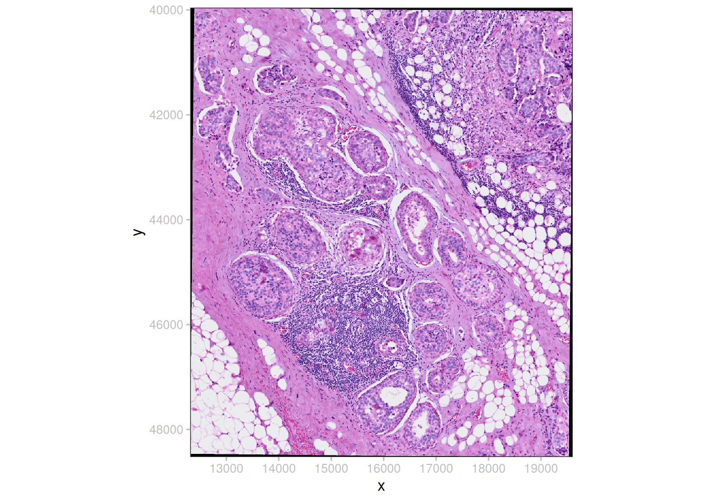
We can also zoom into a particular region by specifying a bounding box and using crop() to subset the data accordingly across all layers:
bb <- list(
xmin=15e3, xmax=18e3,
ymin=44e3, ymax=46e3)
sp <- crop(sd, bb)
plotSpatialData(sp) + plotImage()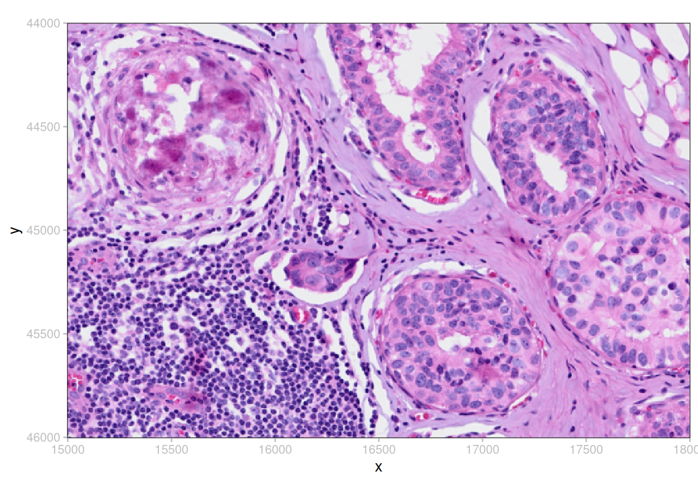
Immunofluorescence
In addition to the H&E, the dataset includes 4 immunofluorescence (IF) markers:
- DAPI (nuclei) marks all cell nuclei and is used for cell segmentation
- ATP1A1/CD45/E-Cadherin (membrane) marks cell boundaries and major lineages
- 18S (cytoplasm) marks the cell body/cytoplasmic RNA and overall cell extent
- αSMA/Vimentin (stroma) marks mesenchymal/stromal tissue, including fibroblasts
These channels are part of the 10x segmentation kit and are used in the multimodal cell segmentation workflow.
img <- image(sd, 2)
as.vector(channels(img))[1] "DAPI" "ATP1A1/CD45/E-Cadherin" "18S"
[4] "AlphaSMA/Vimentin" The underlying image is a 3D array where the first dimension are channels, and the second and third dimensions are height and width; we can verify this by viewing the axes() specified in the .zattrs associated with the image:
do.call(rbind, axes(img)) name type
[1,] "c" "channel"
[2,] "y" "space"
[3,] "x" "space" cat(dim(img))4 2111 1787Let’s visualize the four-plex composite image overlaying these markers; for consistent visualization, we also specify colors to use for each channel:
pal <- c("blue", "green", "cyan", "magenta")
chs <- names(pal) <- channels(img)
plotSpatialData(sd) + plotImage(2, ch=chs, c=pal[chs])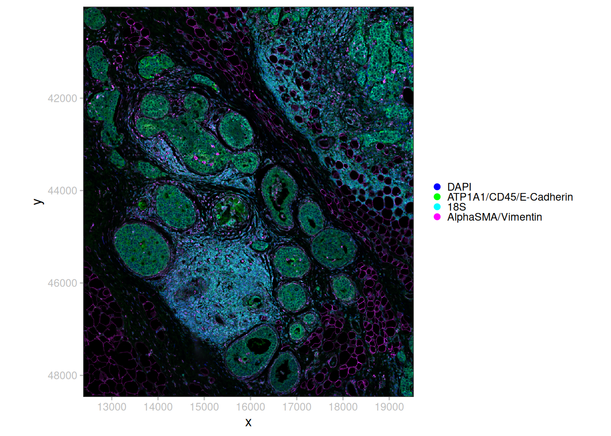
Alternatively, we can visualize each channel separately; here, using the smaller region defined above.
Note that
plotImage() will auto-adjust contrast limits for each channel when rendering images. Channels might hence appear differently when visualized jointly/separately.# plot channels one by one
lapply(chs, \(.) {
plotSpatialData(sd) + ggtitle(.) +
plotImage(i=2, ch=., c=pal[.])
}) |>
# arrange in 2x2 grid
wrap_plots(nrow=2) &
theme_void() & theme(
legend.position="none",
plot.title=element_text(hjust=0.5))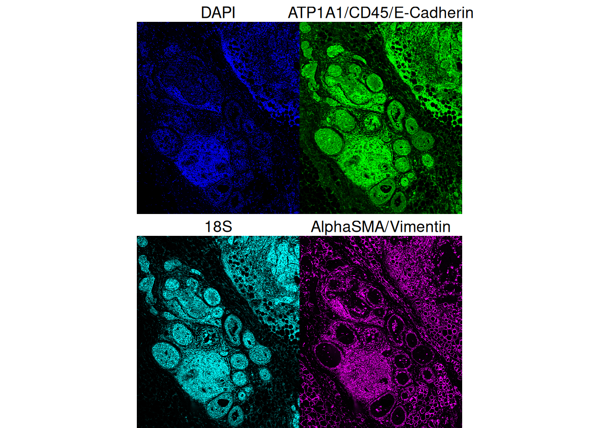
Segmentation
We can also zoom in further to inspect how well cell segmentation boundaries align with the H&E and the immunofluorescent signals:
# crop to 2,000 x 3,000 bounding box
bb <- list(
xmin=15e3, xmax=17e3,
ymin=42e3, ymax=45e3)
sq <- crop(sd, bb)
# visualize HE & IF side-by-side
plotSpatialData(sq) +
plotImage(1) +
plotShape(fill=NA, col="black", linewidth=1/5) +
plotSpatialData(sq) +
plotImage(2, ch=chs, c=pal[chs]) +
plotShape(fill=NA, col="white", linewidth=1/5)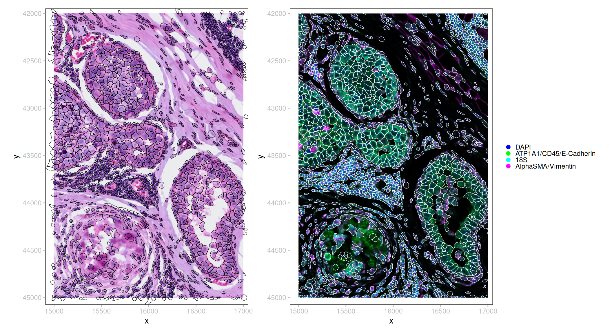
We can also go a step further, visualizing both cell nuclei (in gold) and membrane (in grey) boundaries togeher on an ever smaller region:
# crop to 1,000 x 1,000 bounding box
bb <- list(
xmin=15e3, xmax=16e3,
ymin=43e3, ymax=44e3)
sq <- crop(sd, bb)
# visualize IF, membrane & nuclei boundaries
plotSpatialData(sq) +
plotImage(2, ch=chs, c=pal[chs]) +
plotShape(1, fill=NA, col="grey", linewidth=1/3) +
plotShape(2, fill=NA, col="gold", linewidth=1/3)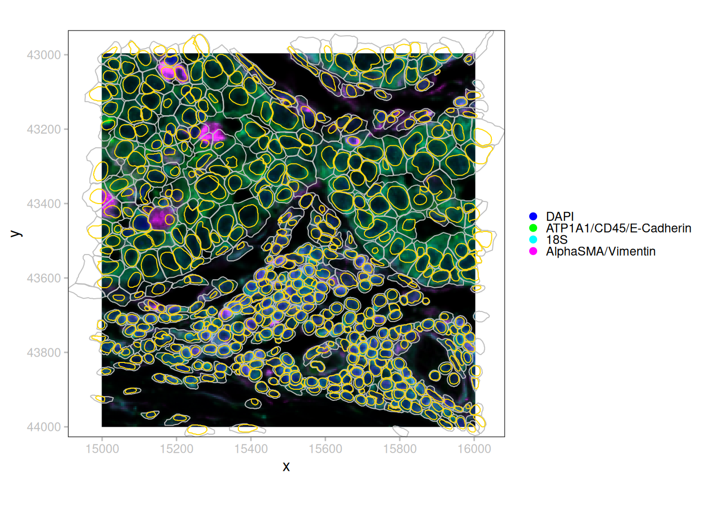
Transcripts
Digging further, let’s zoom in to individual cell resolution and visualize transcript molecules. We colour these by whether or not the 10x software labelled them with overlaps_nucleus:
Important plotPoint arguments:
key= feature(s) to plot (used further below)n= number of points to plot (will downsample at random)ggplotaesthetics, such ascolor,alpha, etc.
# crop to 600 x 600 bounding box
bb <- list(
xmin=15200, xmax=15800,
ymin=43200, ymax=43800)
sq <- crop(sd, bb)
# 'overlaps_nucleus' is 0/1 (no/yes);
# convert to logical for discrete coloring
point(sq) <- mutate(point(sq), overlaps_nucleus=as.logical(overlaps_nucleus))
# visualiye IF, boundaries & transcripts
plotSpatialData(sq) +
plotImage(2, ch=chs, c=pal[chs]) +
plotShape(1, fill=NA, col="grey", linewidth=1/3) +
plotShape(2, fill=NA, col="gold", linewidth=1/3) +
plotPoint(n=4e3, col="overlaps_nucleus", size=0) +
guides(col=guide_legend(override.aes=list(size=2))) +
scale_color_manual(values=c("grey", "red"))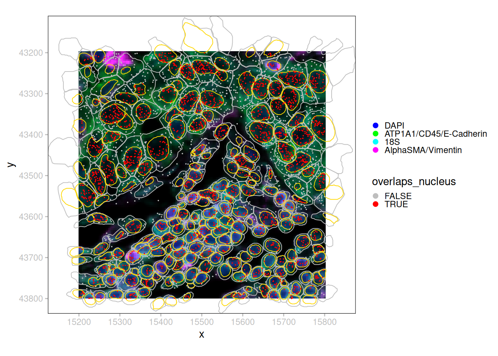
Zooming back out to a larger scale, let’s look at a pretty plot:
Code
bb <- list(xmin=16e3, xmax=18e3, ymin=45e3, ymax=46e3)
sq <- crop(sd[c("images", "points"), list(2, 1)], bb)
plotSpatialData(sq) +
plotImage(ch="DAPI", c="purple") +
plotPoint(n=8e3, col="ivory", size=0) +
theme_void() + theme(legend.position="none")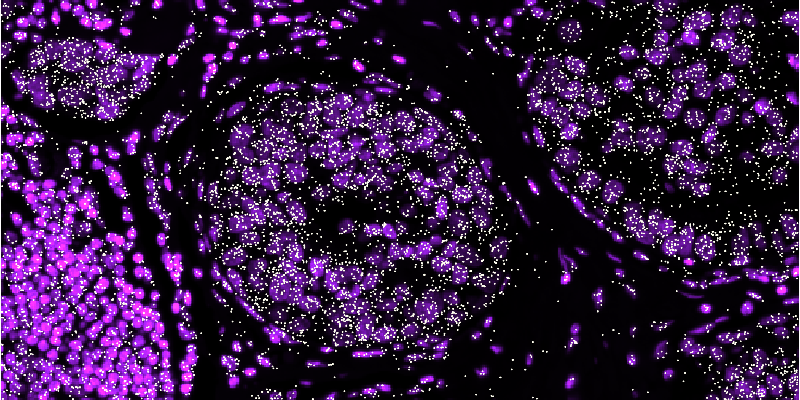
Quality Assessment
Visual inspection is essential. Doing this systematically and, say, check the transcript-to-cell assignments for a whole modern high-plex panel would, however, be impractical. SegTraQ provides a collection of metrics for Segmentation and Transcript Assignment Quality Control.
SegTraQ is implemented in Python. reticulate and Quarto enable us to execute code from both programming languages in one session. We can thus compute QC metrics in Python and subsequently switch back to R.
Python setup
We can instruct our R session to use an existing Python environment with our required dependencies (here, SegTraQ) via reticulate. Below we demonstrate two common approaches:
- a conda/mamba environment
- a lightweight uv virtual environment
We can instruct reticulate to use an existing conda/mamba environment via:
# path to conda binary
bin <- "~/software/mambaforge/bin/conda"
options(reticulate.conda_binary=bin)
# activate environment
use_condaenv("segtraq")This environment was created previously from the command line via:
conda create -n segtraq python=3.11
conda activate segtraq
pip install segtraqAlternatively, we can use a local virtual environment created with uv (install via brew install uv) and point reticulate directly to the corresponding Python executable:
venv_path <- file.path(getwd(), ".venv/bin/python")
use_python(venv_path, required=TRUE)This environment was created previously from the command line via:
uv venv .venv --python 3.11
source .venv/bin/activate
uv pip install segtraqOnce configured, required Python modules can be imported using Python syntax:
import segtraq
import anndata as ad
import spatialdata_plot
import spatialdata as sd
import matplotlib.pyplot as pltRunning SegTraQ
We first load the SpatialData object from the .zarr store in Python:
sdata = sd.read_zarr(r.zs)
sdataSpatialData object, with associated Zarr store: /tmp/RtmpiPlsZN/BC_10x_xenium_sdata.zarr
├── Images
│ ├── 'he_image': DataTree[cyx] (3, 2141, 1822), (3, 1070, 911), (3, 535, 455), (3, 267, 227)
│ └── 'morphology_focus': DataTree[cyx] (4, 2111, 1787), (4, 1055, 893), (4, 527, 446), (4, 263, 223)
├── Points
│ └── 'transcripts': DataFrame with shape: (<Delayed>, 13) (3D points)
├── Shapes
│ ├── 'cell_boundaries': GeoDataFrame shape: (18626, 1) (2D shapes)
│ └── 'nucleus_boundaries': GeoDataFrame shape: (18389, 1) (2D shapes)
└── Tables
└── 'table': AnnData (18626, 5101)
with coordinate systems:
▸ 'global', with elements:
he_image (Images), morphology_focus (Images), transcripts (Points), cell_boundaries (Shapes), nucleus_boundaries (Shapes)SegTraQ organizes metrics into six modules. Here, we begin with the baseline (bl) module, which computes a set of per-cell and -sample summary statistics such as transcript counts, detected genes, cell area, and gene-wise fraction of unassigned transcripts. Metrics can be computed either individually (e.g., st.bl.transcripts_per_cell()), or jointly by running st.run_baseline().
st = segtraq.SegTraQ(sdata,
tables_centroid_x_key="centroid_x",
tables_centroid_y_key="centroid_y",
images_key="morphology_focus")
st.run_baseline()Of the six SegTraQ modules, only the supervised (sp) module requires scRNA-seq reference data. Label transfer can either be performed using a lightweight SegTraQ helper, or can be supplied by the user directly. Here, we use the scRNA-seq reference from Janesick et al. (2023) retrieved above and transfer labels to the spatial data using the SegTraQ helper.
ref = ad.read_h5ad(r.h5)
st.run_label_transfer(
ref,
ref_cell_type="celltype",
ref_ensemble_key=None,
query_ensemble_key=None)We use this reference to derive positive and negative cell type markers – i.e., genes expected to be present or absent in a given cell type – and pass these to the sp module in order to identify potentially contaminated cells. For demonstration, we compute two metrics from the sp module.
# subset to common genes
adata = st.sdata.tables["table"]
common_genes = adata.var_names[adata.var_names.isin(ref.var_names)]
ref = ref[:, common_genes].copy()
# get marker genes
markers = segtraq.markers_from_reference(
ref,
cell_type_key="celltype",
n_jobs=16)
# compute exemplary metrics
_ = st.sp.neighbor_contamination(
markers=markers,
cell_type_key="transferred_cell_type")[34mINFO [0m Creating graph using `[3;35mNone[0m` transform and `[1;36m1[0m` libraries.
_ = st.sp.marker_purity(
markers=markers,
cell_type_key="transferred_cell_type")In the absence of reference scRNA-seq data, SegTraQ provides the region similarity (rs) module that identifies contaminated cells based on the expression similarity between subcellular regions and their local neighborhood. For demonstration, we here view one exemplary metric from the rs module.
st.rs.similarity_border_neighborhood().head() cell_id similarity_border_neighborhood
0 acceakgj-1 0.103752
1 accebped-1 0.127066
2 accedpdh-1 0.043554
3 acceejoe-1 0.124630
4 acceekkh-1 0.126224We can visualize the H&E image, the immunofluorescence channel DAPI, as well as cell boundaries colored by the transferred cell type label or SegTraQ metrics.
Code
# define color map
col_celltype = {
"T": "#fb8072",
"B": "#bc80bd",
"macro": "#910290",
"dendritic": "#fdb462",
"mast": "#959059",
"perivas": "#fed9a6",
"endo": "#a6cee3",
"myoepi": "#2782bb",
"DCIS1": "#3c7761",
"DCIS2": "#66a61e",
"tumor": "#66c2a5",
"stromal": "#d45943",
"nan": "#808080"
}
# compute per-cell color
labs = sdata.tables["table"].obs["transferred_cell_type"].unique().astype(str).tolist()
cols = [col_celltype[lab] for lab in labs]
fg, ax = plt.subplots(2, 3, figsize=(14, 8), constrained_layout=True)
fg.subplots_adjust(wspace=0.5)
# plot histopathology
st.sdata.pl.render_images(
"he_image"
).pl.show(
ax=ax[0, 0],
title="H&E")
# plot immunofluorescence
st.sdata.pl.render_images(
"morphology_focus",
channel="DAPI"
).pl.show(
ax=ax[0, 1],
title="DAPI")
# plot cell boundaries colored by cell type
st.sdata.pl.render_shapes(
element="cell_boundaries",
color="transferred_cell_type",
palette=cols,
groups=labs,
method="matplotlib"
).pl.show(
ax=ax[0, 2],
colorbar=True,
title="Cell type")
# plot cell boundaries colored by elongation
st.sdata.pl.render_shapes(
element="cell_boundaries",
color="elongation",
method="matplotlib"
).pl.show(
ax=ax[1, 0],
colorbar=True,
title="Elongation")
# plot cell boundaries colored by transcript count
st.sdata.pl.render_shapes(
element="cell_boundaries",
color="transcript_count",
method="matplotlib"
).pl.show(
ax=ax[1, 1],
colorbar=True,
title="Transcript count")
# plot cell boundaries colored by negative marker counts
st.sdata.pl.render_shapes(
element="cell_boundaries",
color="negative_marker_contamination_counts",
method="matplotlib"
).pl.show(
ax=ax[1, 2],
colorbar=True,
title="Negative marker (contamination) count")[33mWARNING [0m render_shapes: Found [1;36m3591[0m NaN values in color data. These observations
will be colored with the [32m'na_color'[0m. 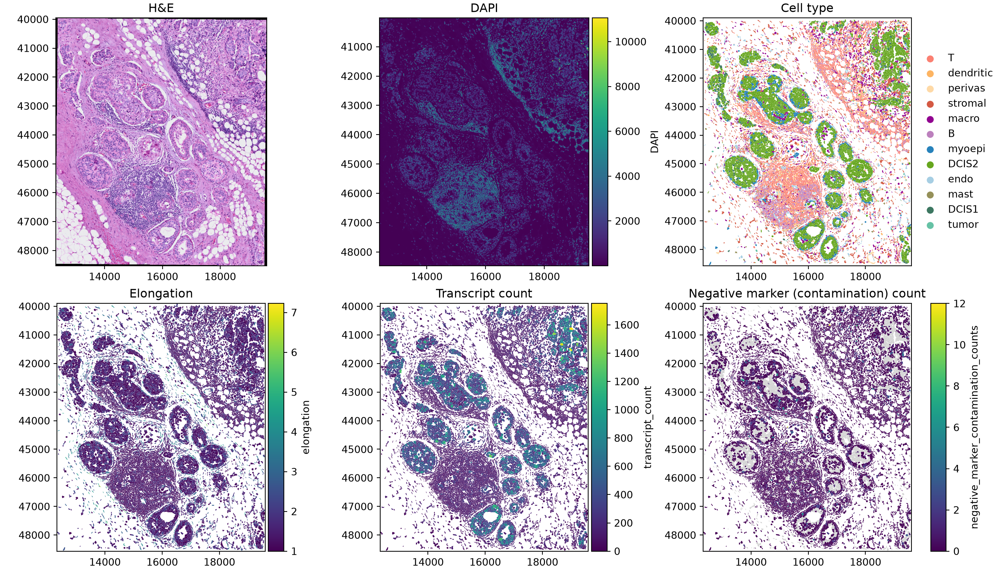
After computing required QC metrics in Python, we’ll move back to R to explore and visualize these in more detail.
Back to R
Let’s retrieve the table – including SegTraQ results – from Python, and transfer it to the SpatialData object in R. We set the table to annotate cell boundaries using setTable(); here, ik specifies the spatialdata’s instance_key used to link observations between table and spatial element.
# set Python table to annotate
# cell segmentation boundaries
se <- py$adata$as_SingleCellExperiment()
# remove old table
sd <- sd[c("images", "points", "shapes")]
(sd <- setTable(sd, y=se,
i="cell_boundaries",
ik="cell_id"))class: SpatialData
- images(2): he_image morphology_focus
- points(1):
- transcripts (2978451)
- shapes(2):
- cell_boundaries (18626,circle)
- nucleus_boundaries (18389,circle)
- tables(1):
- cell_boundaries_table (5101,18626) [cell_boundaries]
coordinate systems(1):
- global(5): he_image morphology_focus cell_boundaries
nucleus_boundaries transcriptsLet’s being by recreating the Python spatialdata_plot from above in R; we can also retrieve the palette used for coloring cell types in Python:
# get color mapping used in Python
pal <- py$col_celltypeCode
# base plot wrapper
.p <- \(sd, x, y=FALSE) {
plotSpatialData(sd) + ggtitle(x) +
theme(axis.title=element_blank()) +
if (y) scale_fill_viridis_c(NULL, na.value="#808080")
}
p1 <- .p(sd, "H&E") + plotImage()
p2 <- .p(sd, "DAPI") + plotImage(2, ch="DAPI", c="yellow")
p3 <- .p(sd, "cell type") +
plotShape(col=NA, fill="transferred_cell_type") +
scale_fill_manual(values=pal, na.value="#808080")
p4 <- .p(sd, "elongation", TRUE) + plotShape(col=NA, fill="elongation")
p5 <- .p(sd, "# transcripts", TRUE) + plotShape(col=NA, fill="transcript_count")
p6 <- .p(sd, "contamination", TRUE) + plotShape(col=NA, fill="negative_marker_contamination_counts")
ps <- list(p1, p2, p3, p4, p5, p6)
wrap_plots(ps, nrow=2) & theme(
legend.justification=c(0, 0.5),
plot.margin=margin(2,2, unit="mm"),
plot.title=element_text(hjust=0.5),
axis.text.x=element_text(angle=30, hjust=1))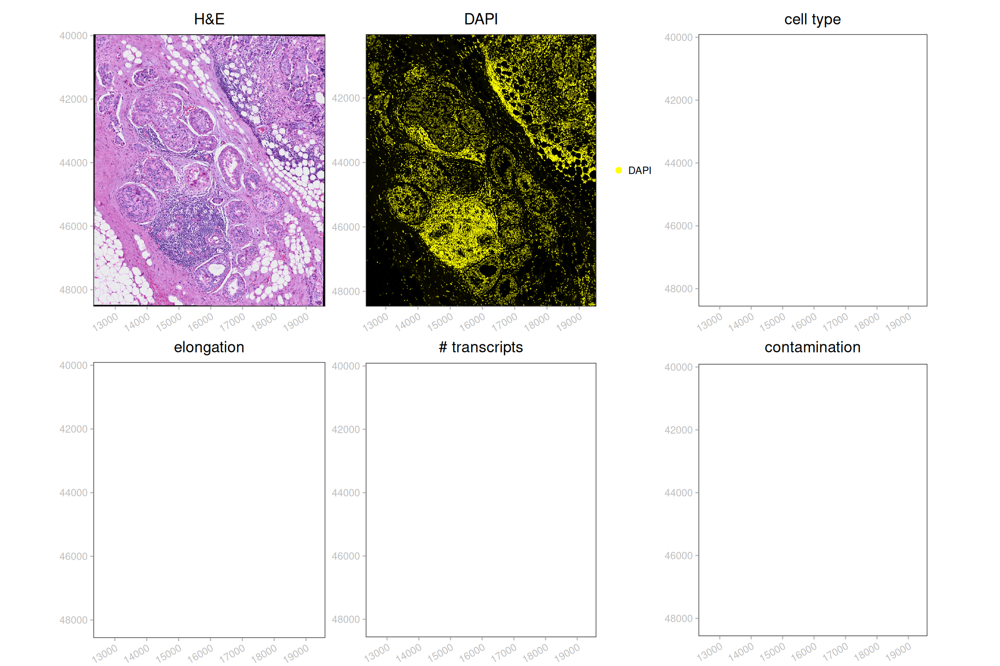
Now, let’s look at a summary of baseline metrics:
Code
se <- table(sd)
n_gs <- mean(se$gene_count, na.rm=TRUE)
n_tx <- mean(se$transcript_count, na.rm=TRUE)
p_tx <- metadata(se)$perc_unassigned_transcripts
data.frame(
metric=c("# cells", "μ(# genes)", "μ(# transcripts)", "% unassigned"),
value=round(c(ncol(se), n_gs, n_tx, p_tx), 2)) metric value
1 # cells 18626.00
2 μ(# genes) 99.91
3 μ(# transcripts) 145.09
4 % unassigned 9.27- Around 9.3% of transcripts were not assigned to any cell.
- The mean transcript count per cell is 145.1.
- The mean gene count per cell is 99.9.
It is also relevant to inspect the mean transcript count per gene per cell. We’ll define a wrapper .boxplot to plot features per cell type as boxplots:
.boxplot <- \(y) {
df <- colData(se) |>
as.data.frame() |>
# simplify naming
dplyr::rename(x=transferred_cell_type) |>
# exclude unassigned
filter(!is.na(x), !is.na(.data[[y]])) |>
# order ascendingly
mutate(x=reorder(x, .data[[y]], FUN=median, na.rm=TRUE))
# visualize 'y' across cell types
ggplot(df, aes(.data[[y]], x, fill=x)) +
geom_boxplot(outlier.size=0.4) +
scale_fill_manual(values=pal) +
ggtitle(y) + theme_bw() + theme(
aspect.ratio=1,
legend.position="none",
axis.title=element_blank(),
plot.title=element_text(hjust=0.5))
}- Stromal cells show higher elongation, whereas T and B cells tend to have less elongated shapes.
- On median, cells express only 1–2 transcripts per gene.
- We can also inspect the
transcript_density, i.e., transcript abundance realtive to cellular area. Some workflows (see below) recommend filtering cells based on transcript density. However, this can bias filtering towards specific cell types, such as macrophages, mast cells, or dendritic cells, which tend to be large but exhibit comparatively low transcript counts.
.boxplot("mean_transcripts_per_gene") +
.boxplot("elongation") +
.boxplot("transcript_density") 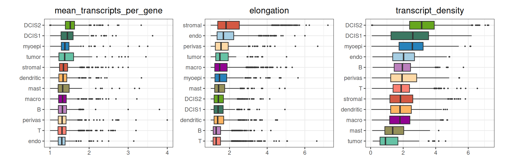
After inspecting baseline metrics, we next assess potential contamination. Here, SegTraQ summarizes directed contamination between source and target cell types based on negative marker expression.
NAvalues indicate pairs for which contamination can’t be assessed, either because the cell types are not spatial neighbors, or because they do not share informative positive/negative marker combinations.The dataset contains only few tumor cells (about 0.53%), which would explain why little or no contamination from them is being detected.
About 19% of myoepithelial cells appear to be contaminated by DCIS2 cells, which are common spatial neighbors. 3% of T cells are contaminated by B cells.
Code
md <- metadata(table(sd))
mx <- md$negative_marker_contamination_binary
# wrangling
df <- mx |>
as.data.frame() |>
tibble::rownames_to_column("source_cell_type") |>
pivot_longer(
-source_cell_type,
names_to="target_cell_type",
values_to="contamination")
# plotting
ggplot(df, aes(
target_cell_type, source_cell_type, fill=contamination)) + geom_tile() +
scale_fill_gradient(low="white", high="red", na.value="lightgrey") +
geom_text(size=3,
aes(label=round(100*contamination)),
filter(df, !is.na(df$contamination))) +
coord_equal(expand=FALSE) +
theme_bw() + theme(
panel.grid=element_blank(),
axis.text.x=element_text(angle=45, hjust=1))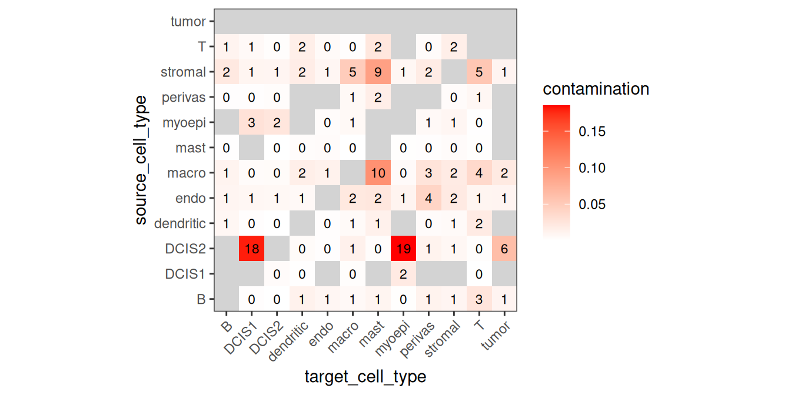
For demonstration, let’s inspect mutually exclusive markers between B and T cells. Here, we recover well-known B cell markers such as MS4A1 and CD19, which are not expected to be expressed in T cells.
mk <- py$markers
B_pos <- unlist(mk$B$positive)
T_neg <- unlist(mk$T$negative)
sort(intersect(B_pos, T_neg)) [1] "ADAM28" "AIM2" "BANK1" "BLK" "BLNK" "CD180"
[7] "CD19" "CD22" "CD38" "CD40" "CD79A" "CD79B"
[13] "CDK14" "CNR2" "COL4A3" "COL4A4" "CR1" "DERL3"
[19] "FCRL1" "FCRL2" "FCRL5" "FCRLA" "IRF4" "KCNN4"
[25] "LRRK2" "MS4A1" "NCF1" "NIBAN3" "PAX5" "PLCG2"
[31] "POU2AF1" "RELT" "SCIMP" "SPIB" "STAP1" "TENT5C"
[37] "TLR1" "TLR6" "TNFRSF13B" "TNFRSF13C" "TNFRSF17" Let’s visualize the expression of MS4A1 in T and B cells. To this end, we crop the dataset to a region with a high density of these cell types. Visually, MS4A1 transcripts appear closer to the cell membrane in T cells than in B cells, which would be consistent with local transcript spillover.
# crop to 2,000 x 2,000 bounding box
bb <- list(
xmin=14e3, xmax=16e3,
ymin=45e3, ymax=47e3)
sq <- crop(sd, bb)
# visualize MS4A1 transcripts over labeled cells
plotSpatialData(sq) +
plotShape(col=NA, fill="transferred_cell_type", alpha=0.8) +
scale_fill_manual(values=pal, na.value="#808080") +
plotPoint(key="MS4A1", size=0.4) +
ggtitle("MS4A1 transcripts in T/B cells")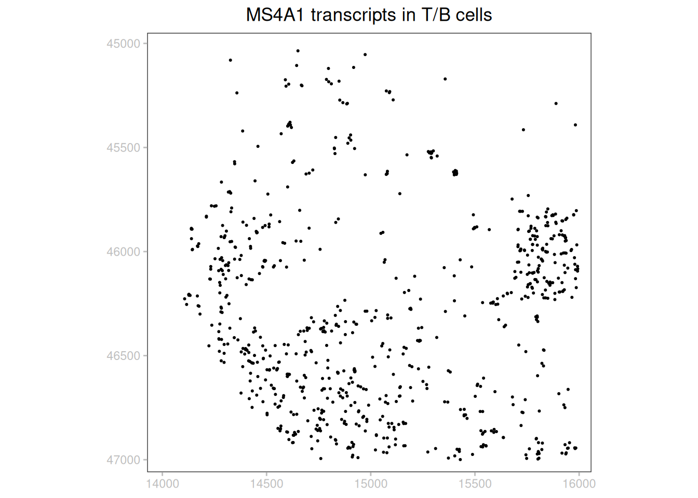
Let’s evaluate this with SegTraQ, which provides the point statistics (ps) module to quantify subcellular transcript distributions within cells. E.g., we can compute transcript-to-membrane distances either across genes and cells, or for selected genes and cell types. For this, we briefly jump back into Python.
Briefly, st.ps.distance_to_membrane quantifies transcript localization relative to cellular boundaries (e.g., nucleus or membrane) by computing distances of all transcripts to their reference polygon, normalizing for cell area, and reporting the average boundary distance for each transcript species. (Note: negative distances reflect localization outside of a cell’s polygon.)
_ = st.ps.distance_to_membrane(
genes=["MS4A1"],
cell_type_key="transferred_cell_type",
cell_type_query=["B", "T"])Let’s jump back to R and plot the distance of MS4A1 in B and T cells. Indeed, MS4A1 is closer to the cell membrane in T than in B cells. This aligns with these signals arising from spillover rather than true biological expression:
se <- py$adata$as_SingleCellExperiment()
sd <- setTable(sd, y=se,
i="cell_boundaries",
ik="cell_id")Code
df <- colData(se) |>
as.data.frame() |>
filter(
transferred_cell_type %in% c("B", "T"),
!is.na(distance_to_cell_membrane_norm_MS4A1))
ggplot(df, aes(
transferred_cell_type,
distance_to_cell_membrane_norm_MS4A1,
fill=transferred_cell_type)) +
geom_boxplot(outlier.size=1/3, alpha=1/3) +
geom_jitter(
aes(color=transferred_cell_type),
width=1/5, size=1/3, alpha=2/3) +
scale_fill_manual(values=pal) +
scale_color_manual(values=pal) +
theme_bw() + theme(
aspect.ratio=3/2,
legend.position="none",
axis.title=element_blank(),
plot.title=element_text(hjust=0.5)) +
ggtitle("distance of MS4A1\nto cell membrane") 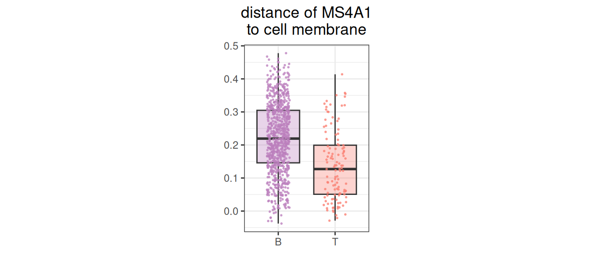
SegTraQ can support the identification and filtering of low-quality cells or samples based on morphological abnormalities, low transcript counts, or increased contamination. It can also be used to benchmark segmentation methods and help identify the most suitable segmentation strategy for a given dataset.
To explore additional SegTraQ metrics, please refer to the SegTraQ documentation. SegTraQ is still under active development; additional metrics and improvements will keep being introduced in future releases.
Filtering
The SpatialData object contains a single table element – represented as a SingleCellExperiment – annotating cell_boundaries. This table contains the single-cell level data: a gene \(\times\) cell count matrix (assay slot "X"), gene/cell metadata (row/colData), as well as spatial coordinates (reducedDim slot "spatial").
(se <- table(sd))class: SingleCellExperiment
dim: 5101 18626
metadata(8): spatialdata_attrs num_cells ...
negative_marker_contamination negative_marker_contamination_binary
assays(1): X
rownames(5101): A2ML1 AAMP ... ZYG11B ZYX
rowData names(6): gene_ids feature_types ... unassigned perc_unassigned
colnames(18626): 6430 6431 ... 687177 687178
colData names(43): cell_id transcript_counts ...
distance_to_cell_membrane_norm_MS4A1
distance_to_cell_membrane_inverse_MS4A1
reducedDimNames(1): spatial
mainExpName: NULL
altExpNames(0):Because data are represented as a SCE, we can perform standard processing tasks using tools available in R/Bioc (e.g., scrapper) such as filtering little informative cells based on, e.g., transcript_density:
# exclude cells <2 MADs in log-counts per area
cpa <- log(se$transcript_counts/se$cell_area)
mad <- mad(cpa, na.rm=TRUE)
med <- median(cpa, na.rm=TRUE)
se$ex <- is.na(cpa) | (cpa < med-2*mad) Code
sq <- sd
table(sq) <- se
plotSpatialData(sq) +
plotShape(col=NA, fill="ex") +
scale_fill_manual("exclude", values=c("grey", "red"))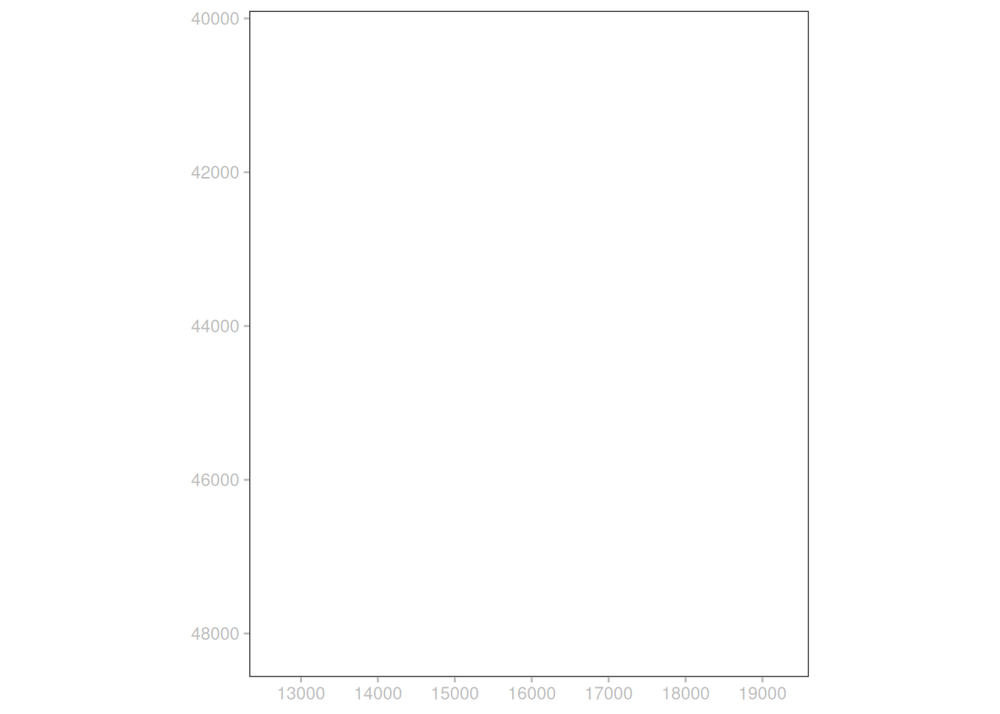
Processing
We’ll here filter out cells with comparatively low transcript density, and proceed with processing steps standard for scRNA-seq data, namely:
- log-library size normalization
- highly variable gene (HVG) selection
- principal component analysis (PCA)
- shared-nearest neighbor (SNN) graph construction
- community detection using the Leiden algorithm
base::table(se$ex)
FALSE TRUE
16953 1673 se <- se[, !se$ex]
assayNames(se) <- "counts"
se <- normalizeRnaCounts.se(se)
se <- chooseRnaHvgs.se(se, top=2e3)
se <- runPca.se(se, features=rowData(se)$hvg)
se <- clusterGraph.se(se, method="leiden", resolution=0.4)
nk <- nlevels(se$clusters)
table(sd) <- seLet’s visualize the resulting cluster assignments spatially; from this, we can observe that malignant regions are mostly made up of a single (large) cluster:
plotSpatialData(sd) +
plotShape(col=NA, fill="clusters") +
scale_fill_manual(values=hcl.colors(nk, "Spectral")) 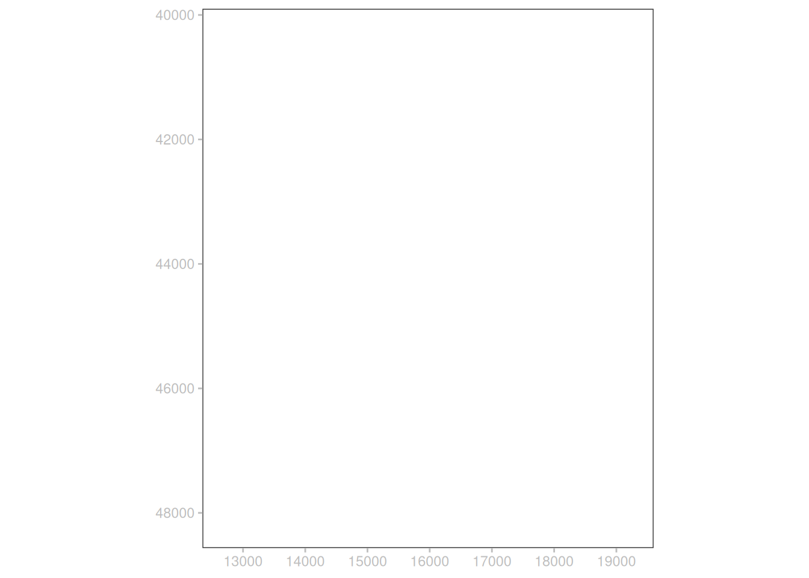
Downstream
Colocalization
A common step in spatial omics data analysis is to evaluate the colocalization of cell types. This can be done using a variety of tools; for dydactic purposes, we’ll do in manually here by i) using the RANN to identify nearest neighbors (NNs) in a radial neighborhood around each cell; and ii) quantifying the relative abundance of cell types around each cell type.
library(RANN)For such type of analysis, it’s important to get a sense of how many neighbors are typically found within a given radius; this can help decide on a meaningful distance threshold to use for colocalization analysis.
Caution: RANN’s nn2() function provides options for "standard" and distance-thresholded kNN search (searchtype="radius"). In any case, k determines the maximum number of NNs to compute (even if there are more!). Although a k equal to the number of query observations allows an exhaustive search, it is typically set much lower in order to reduce computational effort.
# get spatial coordinates
xy <- centroids(spatialdataR::transform(shape(sd)))
# get cells in radial neighborhood
nn <- nn2(xy, searchtype="radius", r=r <- 100, k=k <- 51)
is <- nn$nn.idx[, -1] # exclude self
ns <- rowSums(is > 0) # number of NNs
summary(ns) Min. 1st Qu. Median Mean 3rd Qu. Max.
0.00 9.00 13.00 15.38 23.00 46.00 Here, we find that cells have 0-46 neighbors (15 on average) within a radius of 100 units. This seems adequeate enough to capture local neighborhoods without being too large.
NoteMore about nearest neighbors
The number of NNs within a given distance (or, the distance yielding a given number of NNs) can vary greatly between tissue types. It is generally a good idea to perform a NNs search with a reasonably large k, and to inspect the number of NNs across cells (e.g., hist(rowSums(...$nn.idx > 0))). When data are large (millions of cells), this could use a few representative sections.
Then, k should be set such that this distribution tails off, i.e., there are few if any cells with more neighbors (or, r should be made smaller). Non-quantitatively speaking, we’d like to have enough NNs for quantification, but they should fall close enough to be meaningful (e.g., paracrine signaling).
hist(ns, breaks=seq(0, k+1)-0.5, col="steelblue", border="lavender",
main="", xlab="# NNs within 100 units distance", ylab="# cells")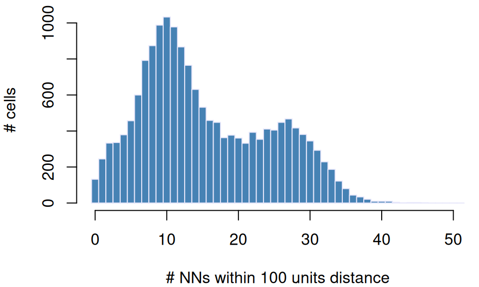
We can now quantify the relative subpopulation composition around each cell, and summarize this at the cluster level to get a sense of which cell types tend to attract/avoid one another.
# quantify cell type frequencies in neighborhood
is[is == 0] <- NA
ks <- factor(se$transferred_cell_type)
mx <- matrix(ks[is], nrow=ncol(se))
df <- lapply(levels(ks), \(k) {
p <- rowMeans(mx == k, na.rm=TRUE)
data.frame(i=ks, j=k, p)
}) |> do.call(what=rbind)
head(df) i j p
1 T B 0.07692308
2 T B 0.06451613
3 dendritic B 0.07142857
4 T B 0.03448276
5 T B 0.11111111
6 T B 0.10344828We can observe ~3 colocalization modules, namely: an immune module (T, B, DC), a tumor/stromal module (DCIS1/2, tumor, myoepithelia), and a stromal/myeloid module (mast, macrophages, endothelial -EC- and perivascular -PV- cells). Within this latter module, EC/PV are especially attraced to one another.
EC/PV attraction is consistent with the fact that EC line the interior of blood vessels, while PV (pericytes and smooth muscle cells) envelop them. Together, they form a functional unit for tissue homeostasis that provides stability and helps regulate blood vessle formation as well as permability.
Code
# score colocalization between cell types
# (average & z-scale by target cell type)
fd <- df |>
filter(!is.na(i)) |> group_by(i, j) |>
summarise_at("p", mean, na.rm=TRUE) |>
group_by(j) |> mutate_at("p", base::scale)
# hierarchical clustering of cell types
# based on colocalization patterns
mx <- pivot_wider(fd, names_from="i", values_from="p")
hc <- hclust(dist(as.matrix(mx[, -1])))
xo <- mx$j[hc$order]
ggplot(fd, aes(i, j, fill=p)) + geom_tile() +
scale_fill_gradient2(NULL, low="blue", high="red") +
ggtitle(paste0(
"z-scaled frequency of X\n",
"in radial neighborhood Y")) +
scale_y_discrete(limits=xo) +
scale_x_discrete(limits=xo) +
coord_equal(expand=FALSE) +
theme_bw() + theme(
axis.title=element_blank(),
legend.key.height=unit(1, "lines"),
legend.key.width=unit(.5, "lines"),
plot.title=element_text(hjust=0.5),
axis.text.x=element_text(angle=45, hjust=1))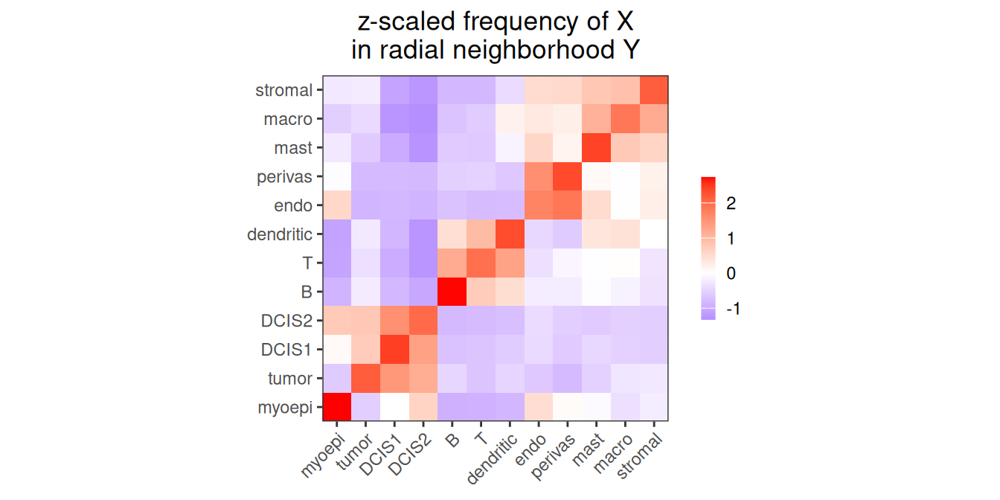
Structures
The R/Bioconductor package sosta (Gunz et al. 2025) provides tools to identify and quantitatively characterize multi-cellular anatomical structures by modeling cells as a ‘marker’ point process, and delineating spatial structures based on a threshold on cellular ‘intensity’.
Structures could, for example, represent germinal centers (GC) in tonsil, metastases or tertiary lymphoid structures (TLS) in cancer, etc.
library(sosta)
library(spatstat.geom)We’ll start by construction a point pattern process (ppp) of cell centroids, using cluster assignments as marks. Note that we first transform boundaries to align with the coordinate space shared between all elements; alternatively, this could be done after reconstruction of spatial structures.
xy <- centroids(spatialdataR::transform(shape(sd)))
ow <- owin(xrange=range(xy[, 1]), yrange=range(xy[, 2]))
pp <- ppp(x=xy[, 1], y=xy[, 2], window=ow, marks=se$clusters)We can now use cellular density (more precisely, the ppp’s intensity) to identify multi-cellular anatomical substructures using sosta; we’ll then assign these to our object as a new shape element. Here, we based structure calling on malignant subpopulations:
DCIS = ductal carcinoma in situ is a very early form of breast cancer.
# identify malignant cluster(s)
tum <- c("DCIS1", "DCIS2", "tumor")
idx <- se$transferred_cell_type %in% tum
(use <- names(which.max(table(se$clusters[idx]))))[1] "4"# reconstruct ROIs based on cellular density
roi <- reconstructShapeDensity(pp, markSelect=use, dim=400)
st_geometry(roi) <- "geometry"
roi <- SpatialDataShape(roi)
shape(sd, "roi") <- roiCode
plotSpatialData(sd) +
plotShape(col=NA, fill="clusters") +
plotShape("roi", fill=NA, linewidth=1) +
scale_fill_manual(values=hcl.colors(nk, "Spectral")) 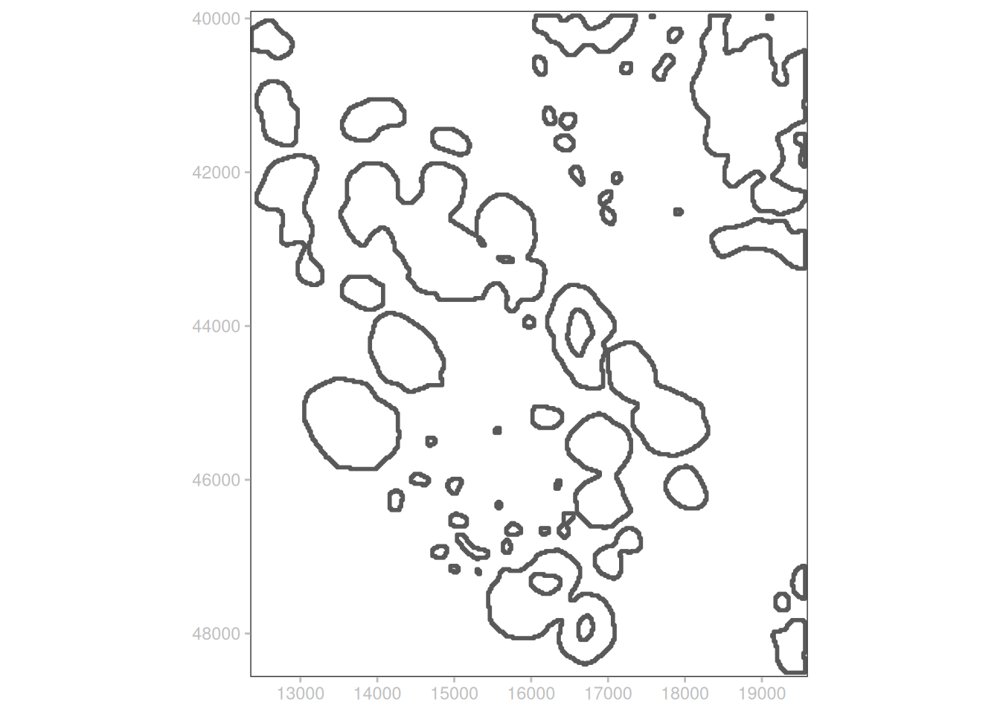
Next, we can use regions to aggregate cell-level measurements into pseudo-bulks using mask() (argument how specifies how to do that). Masking will generate an additional genes \(\times\) regions table in which cell metadata (colData) i/n_instances are the indices/number of cells contributing to each aggregate, and the first observation (column "0") captures data on out-of-region cells.
sd <- mask(sd, i="cell_boundaries", j="roi", how="sum")
(pb <- table(sd, "cell_boundaries_by_roi"))class: SingleCellExperiment
dim: 5101 54
metadata(0):
assays(1): sum
rownames(5101): A2ML1 AAMP ... ZYG11B ZYX
rowData names(0):
colnames(54): 0 1 ... 52 53
colData names(2): i_instances n_instances
reducedDimNames(0):
mainExpName: NULL
altExpNames(0):Structures comprise 1-1079 cells (115 on average), whereas 10860 cells have not been assigned to any region:
ns <- pb$n_instances
range(ns[-1]) # per region[1] 1 1079mean(ns[-1]) # on average[1] 114.9623ns[1] # unassigned[1] 10860While sosta has identified 53 regions, we’ll filter out those comprising fewer than 100 cells in order to rid ourselves of spurious findings:
ncol(pb <- pb[, pb$n_instances >= 100])[1] 13Since we have tracked the indices of cells falling within each region, we can also inspect the composition of these regions in terms of cell types; here, using transferred_cell_type labels rather than Leiden clusters:
In a multi-section setting, one could compare structure-level pseudobulks across sections, e.g., in terms of differential expression or cell type abundances (T cell exhaustion, immune infiltration, etc.).
Code
# count clusters by region
is <- pb$i_instances[-1] # cell indices by region
ks <- se$transferred_cell_type # cell type assignments
ns <- sapply(is, \(i) table(ks[i]))
# wrangling
df <- as.data.frame(ns) |>
tibble::rownames_to_column("cluster") |>
pivot_longer(-cluster, names_to="region", values_to="n_cells")
# plotting
p0 <- ggplot(df, aes(
reorder(region, n_cells),
x=n_cells, fill=cluster))
p1 <- p0 +
geom_col(position="identity") +
labs(x="# cells", y="region")
p2 <- p0 +
geom_col(position="fill") +
labs(x="% cells", y="region")
# arrangement
wrap_plots(p1, p2, guides="collect") &
scale_fill_manual(values=pal) &
coord_cartesian(expand=FALSE) &
theme_bw() & theme(
aspect.ratio=1,
panel.grid.minor=element_blank(),
panel.grid.major.y=element_blank(),
legend.key.size=unit(2/3, "lines"))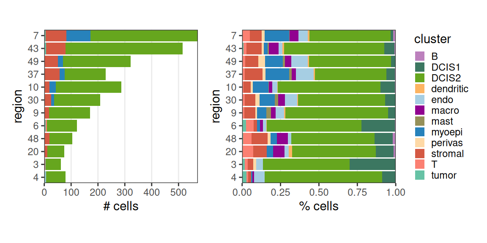
In conclusing, we’ll briefly investigate the principle components (PCs) of region-level pseudobulks. This allows us to highlight features that drive transcriptional variability between them; note that these are necessarily also affected by compositional differences between regions in terms of cell types.
# library-size normalization
pb <- normalizeRnaCounts.se(pb,
log=FALSE,
assay.type="sum",
output.name="normcounts")
# principal component analysis (PCA)
pc <- runPca(assay(pb, "normcounts"))
# top-loaded features for PCs 1-3
apply(pc$rotation[, 1:3], 2, \(.) {
. <- sort(abs(.), decreasing=TRUE)
head(names(.), 10)
}) [,1] [,2] [,3]
[1,] "XBP1" "CA12" "RAB11FIP1"
[2,] "TIMP3" "CCND1" "XBP1"
[3,] "NPY1R" "TSPAN13" "TCIM"
[4,] "ANPEP" "NPY1R" "HSPB1"
[5,] "EEF1G" "XBP1" "NPY1R"
[6,] "IL6ST" "EEF1G" "EEF1G"
[7,] "SLC9A3R1" "TIMP3" "SERPINA3"
[8,] "TMEM101" "TCIM" "H3F3B"
[9,] "IL7R" "PDZK1" "IL7R"
[10,] "NORAD" "GATA3" "CD52" # visualize exemplary feature spatially
plotSpatialData(sd) +
plotShape(col=NA, fill="XBP1", assay="logcounts") +
scale_fill_gradientn(colors=rev(hcl.colors(9, "Roma")))
AI tells us “X-box binding protein 1 (XBP1) is a key transcription factor, activated by the IRE1/XBP1 branch of the Unfolded Protein Response (UPR), which promotes breast cancer development, progression, and resistance to therapy.”; so let’s believe that makes sense, be proud, and move on.
Appendix
NoteSession
sessionInfo()R version 4.6.2 (2026-10-29)
Platform: x86_64-pc-linux-gnu
Running under: Ubuntu 26.04.1 LTS
Matrix products: default
BLAS: /usr/lib/x86_64-linux-gnu/openblas-pthread/libblas.so.3
LAPACK: /usr/lib/x86_64-linux-gnu/openblas-pthread/libopenblasp-r0.3.32.so; LAPACK version 3.12.0
locale:
[1] LC_CTYPE=C.UTF-8 LC_NUMERIC=C LC_TIME=C.UTF-8
[4] LC_COLLATE=C.UTF-8 LC_MONETARY=C.UTF-8 LC_MESSAGES=C.UTF-8
[7] LC_PAPER=C.UTF-8 LC_NAME=C LC_ADDRESS=C
[10] LC_TELEPHONE=C LC_MEASUREMENT=C.UTF-8 LC_IDENTIFICATION=C
time zone: UTC
tzcode source: system (glibc)
attached base packages:
[1] stats4 stats graphics grDevices datasets utils methods
[8] base
other attached packages:
[1] spatstat.geom_3.8-3 spatstat.univar_3.2-0
[3] spatstat.data_3.1-9 sosta_1.5.2
[5] RANN_2.6.3 SingleCellExperiment_1.35.2
[7] SummarizedExperiment_1.43.0 Biobase_2.73.2
[9] GenomicRanges_1.65.4 Seqinfo_1.3.2
[11] IRanges_2.47.5 S4Vectors_0.51.10
[13] BiocGenerics_0.59.12 generics_0.1.4
[15] MatrixGenerics_1.25.0 matrixStats_1.5.0
[17] SpatialData.plot_0.99.12 SpatialData.data_0.99.10
[19] spatialdataR_0.99.47 reticulate_1.47.0
[21] patchwork_1.3.2 scrapper_1.7.9
[23] anndataR_1.3.5 ggplot2_4.0.4
[25] tidyr_1.3.2 dplyr_1.2.1
[27] sf_1.1-3
loaded via a namespace (and not attached):
[1] RColorBrewer_1.1-3 jsonlite_2.0.0 wk_0.9.5
[4] magrittr_2.0.5 spatstat.utils_3.2-6 magick_2.9.1
[7] farver_2.1.2 rmarkdown_2.32 fs_2.1.0
[10] vctrs_0.7.3 spatstat.explore_3.8-3 RCurl_1.98-1.20
[13] terra_1.9-50 duckspatial_1.4.0 htmltools_0.5.9
[16] S4Arrays_1.13.2 curl_8.1.0 BiocNeighbors_2.7.3
[19] SparseArray_1.13.4 KernSmooth_2.23-27 htmlwidgets_1.6.4
[22] httr2_1.3.0 uuid_1.2-2 lifecycle_1.0.5
[25] pkgconfig_2.0.3 Matrix_1.7-6 R6_2.6.1
[28] fastmap_1.2.0 digest_0.6.39 ggnewscale_0.5.2
[31] paws.storage_0.11.0 tensor_1.5.1 beachmat_2.29.3
[34] labeling_0.4.3 Rarr_2.1.69 spatstat.sparse_3.2-0
[37] polyclip_1.10-7 abind_1.4-8 compiler_4.6.2
[40] proxy_0.4-29 withr_3.0.3 S7_0.2.2
[43] tiff_0.1-12 DBI_1.3.0 R.utils_2.13.0
[46] grumpy_0.2.0 duckdb_2.0.0 DelayedArray_0.39.8
[49] rjson_0.2.23 classInt_0.4-11 tools_4.6.2
[52] units_1.0-1 goftest_1.2-3 R.oo_1.27.1
[55] glue_1.8.1 nlme_3.1-172 EBImage_4.55.2
[58] grid_4.6.2 gtable_0.3.6 R.methodsS3_1.8.2
[61] class_7.3-24 ZarrArray_1.1.7 XVector_0.53.0
[64] pillar_1.11.1 lattice_0.23-1 renv_1.3.1
[67] deldir_2.0-4 tidyselect_1.2.1 paws.common_0.9.0
[70] RBGL_1.89.0 locfit_1.5-9.12 knitr_1.52
[73] xfun_0.62 smoothr_1.3.0 fftwtools_0.9-11
[76] yaml_2.3.12 codetools_0.2-20 evaluate_1.0.5
[79] tibble_3.3.1 BiocManager_1.30.27 graph_1.91.0
[82] cli_3.6.6 Rcpp_1.1.2 spatstat.random_3.5-2
[85] dbplyr_2.6.0 png_0.1-9 parallel_4.6.2
[88] blob_1.3.0 jpeg_0.1-11 bitops_1.1-0
[91] SpatialExperiment_1.23.0 viridisLite_0.4.3 scales_1.4.0
[94] e1071_1.7-17 purrr_1.2.2 BiocStyle_2.41.0
[97] rlang_1.3.0 References
Gunz, Samuel, Helena Lucia Crowell, and Mark D Robinson. 2025. “Analysis of anatomical multi-cellular structures from spatial omics data using sosta.” bioRxiv, 2025.10.13.682065. https://doi.org/10.1101/2025.10.13.682065.
Janesick, Amanda, Robert Shelansky, Andrew D Gottscho, et al. 2023. “High resolution mapping of the tumor microenvironment using integrated single-cell, spatial and in situ analysis.” Nature Communications 14 (1): 8353. https://doi.org/10.1038/s41467-023-43458-x.